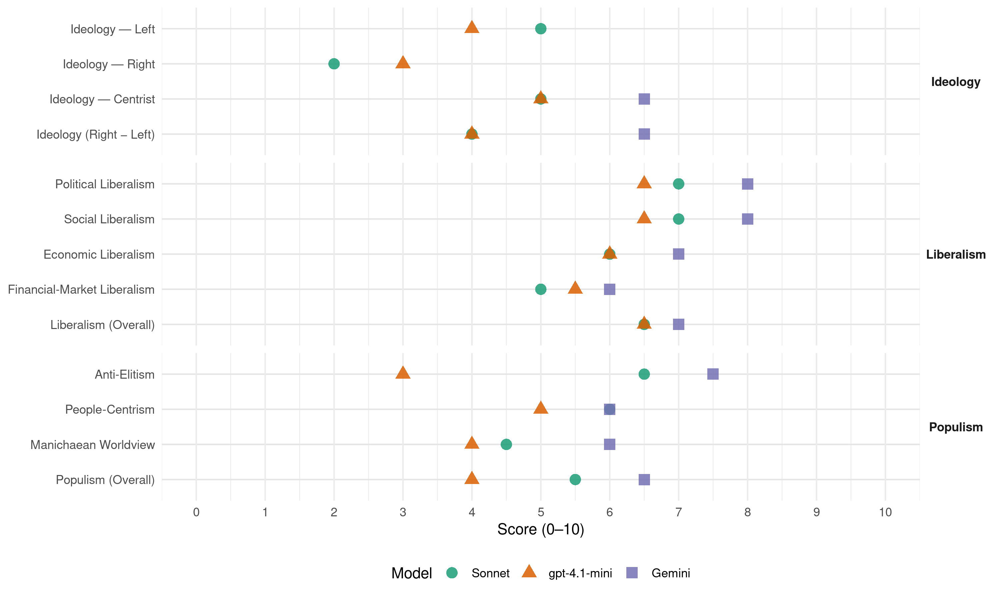

ZNG (Bosnia-Herzegovina, 2022)
manifesto_id 79441_202210
Get full text: This site shows derived annotations and short verbatim quotes only. The full manifesto text is © Manifesto Project / WZB — obtain it via manifesto-project.wzb.eu using the manifesto_id above.
Headline scores
| Dimension | Sonnet | gpt-4.1-mini | Gemini |
|---|---|---|---|
| Populism (Overall) | 5.5 | 4.0 | 6.5 |
| Anti-Elitism | 6.5 | 3.0 | 7.5 |
| People-Centrism | 6.0 | 5.0 | 6.0 |
| Manichaean Worldview | 4.5 | 4.0 | 6.0 |
| Ideology (Right − Left) | 4.0 | 4.0 | 6.5 |
| Liberalism (Overall) | 6.5 | 6.5 | 7.0 |
| Political Liberalism | 7.0 | 6.5 | 8.0 |
| Social Liberalism | 7.0 | 6.5 | 8.0 |
| Economic Liberalism | 6.0 | 6.0 | 7.0 |
| Financial-Market Liberalism | 5.0 | 5.5 | 6.0 |
Evidence per dimension
Economic Liberalism
Gemini · score 7.0 · verified · chunk 1
“debirokratizaciju ekonomskog sistema BiH skraćivanjem”
Istovremeno je potrebno izvršiti debirokratizaciju ekonomskog sistema BiH skraćivanjem svih poslova u vezi s otvaranjem kompanija
Gemini · score 7.0 · verified · chunk 2
“rasteretiti privredu suvišnih nameta najmanje za 30%”
Istovremeno je potrebno rasteretiti privredu suvišnih nameta najmanje za 30% (prije svega kroz smanjenje poreznih stopa, parafiskalnih nameta i akciza), a tako ostvarene uštede
gpt-4.1-mini · score 6.0 · verified · chunk 1
“promocije i zaštite domaće privrede, otvaranja novih radnih mjesta, razvoja vanjsko-trgovinske razmjene”
Ekonomski rast u BiH nema bez finansijske stabilnosti, promocije i zaštite domaće privrede, otvaranja novih radnih mjesta, razvoja vanjsko-trgovinske razmjene, a sve navedeno može se postići isključivo strukturnim ekonomskim reformama.
gpt-4.1-mini · score 6.0 · verified · chunk 2
“restrikciju potrošnje u javnom sektoru te intenziviranju bankarske djelatnosti u BiH”
Potrebno je naglasiti da bez političke stabilnosti u BiH i poboljšanja poslovnog ambijenta nema prijeko potrebne fiskalne održivosti, te je potrebno posebnu pažnju posvetiti unapređenju-olakšanju uvjeta za obavljanje poslovne djelatnosti, restrikciju potrošnje u javnom sektoru te intenziviranju bankarske djelatnosti u BiH.
Sonnet · score 6.0 · verified · chunk 2
“rasteretiti privredu suvišnih nameta najmanje za 30%”
Istovremeno je potrebno rasteretiti privredu suvišnih nameta najmanje za 30% (prije svega kroz smanjenje poreznih stopa, parafiskalnih nameta i akciza)
Financial-Market Liberalism
Gemini · score 6.0 · verified · chunk 1
“tržište kapitala kao alternativni izvor finansiranja”
smatraju rizičnom zemljom zbog ukupne političke i društvene situacije u BiH, moramo iznaći način da privučemo strane investicije koje su nam neophodne za bilo kakav ekonomski rast. Istovremeno, tržište kapitala kao alternativni izvor finansiranja je nedovoljno razvijeno
Gemini · score 6.0 · verified · chunk 2
“intenziviranju bankarske djelatnosti u BiH”
te je potrebno posebnu pažnju posvetiti unapređenju-olakšanju uvjeta za obavljanje poslovne djelatnosti, restrikciju potrošnje u javnom sektoru te intenziviranju bankarske djelatnosti u BiH.
gpt-4.1-mini · score 5.0 · verified · chunk 1
“transparentnu politiku u dodjeli bespovratnih sredstava i povoljnih kreditnih linija koje zaslužuju”
Tržište kapitala kao alternativni izvor finansiranja je nedovoljno razvijeno, a nadležne vlasti do sada nisu uspjele razviti transparentnu politiku u dodjeli bespovratnih sredstava i povoljnih kreditnih linija koje sasvim izvjesno predstavnici zdrave privrede u Bosni i Hercegovini zaslužuju.
gpt-4.1-mini · score 6.0 · verified · chunk 2
“bankarske djelatnosti u BiH”
Potrebno je naglasiti da bez političke stabilnosti u BiH i poboljšanja poslovnog ambijenta nema prijeko potrebne fiskalne održivosti, te je potrebno posebnu pažnju posvetiti unapređenju-olakšanju uvjeta za obavljanje poslovne djelatnosti, restrikciju potrošnje u javnom sektoru te intenziviranju bankarske djelatnosti u BiH.
Sonnet · score 5.0 · verified · chunk 1
“tržište kapitala kao alternativni izvor finansiranja”
Istovremeno, tržište kapitala kao alternativni izvor finansiranja je nedovoljno razvijeno, a nadležne vlasti do sada nisu uspjele razviti transparentnu politiku
Sonnet · score 5.0 · verified · chunk 2
“intenziviranju bankarske djelatnosti u BiH”
posebnu pažnju posvetiti unapređenju-olakšanju uvjeta za obavljanje poslovne djelatnosti, restrikciji potrošnje u javnom sektoru te intenziviranju bankarske djelatnosti u BiH.
Political Liberalism
Gemini · score 8.0 · verified · chunk 1
“izgradnju principa vladavine prava u Bosni”
zašto smo kao država neefikasni u izgradnji principa vladavine prava u Bosni i Hercegovini. Zbog takvog sistema
Gemini · score 8.0 · verified · chunk 2
“konačno zavlada princip vladavine prava”
Istovremeno, moramo sve učiniti da državni sistem učinimo funkcionalnim i da u ovoj zemlji konačno zavlada princip vladavine prava a ne nepotizma i vladavine korupcije.
gpt-4.1-mini · score 6.0 · verified · chunk 1
“poštivanju i zaštiti ustavnog poretka, svih ljudskih prava, promociji demokratskih principa”
Tu vrstu prioriteta prvenstveno treba zasnivati na poštivanju i zaštiti ustavnog poretka, svih ljudskih prava, promociji demokratskih principa, građanskih prava i sloboda. U tom smislu potrebno je stvoriti uvjete za profesionalan rad nadležnih organa, institucija i agencija koje se bave ovom problematikom s posebnim ciljem, a kad su u pitanju sudski i tužilački organi te policijske agencije, da se izvrši potpuna depolitizacija navedenih tijela.
gpt-4.1-mini · score 7.0 · verified · chunk 2
“princip vladavine prava a ne nepotizma i vladavine korupcije”
Moramo sve učiniti da državni sistem učinimo funkcionalnim i da u ovoj zemlji konačno zavlada princip vladavine prava a ne nepotizma i vladavine korupcije. Trebamo osmisliti način kako da olakšamo procedure za zapošljavanje mladih posebno prilikom stupanja u prvi radni odnos uz mogućnost sufinansiranja programa pripravništva i prvog zaposlenja.
Sonnet · score 8.0 · verified · chunk 1
“demokratsku, funkcionalnu državu, članicu NATO saveza”
učine sve da izgrade demokratsku, funkcionalnu državu, članicu NATO saveza i punopravnu članicu EU, državu koja će svakom građaninu
Sonnet · score 6.0 · verified · chunk 2
“princip vladavine prava a ne nepotizma”
moramo sve učiniti da državni sistem učinimo funkcionalnim i da u ovoj zemlji konačno zavlada princip vladavine prava a ne nepotizma i vladavine korupcije.
Liberalism (Overall)
Gemini · score 7.0 · verified · chunk 1
“izgradnju principa vladavine prava u Bosni”
zašto smo kao država neefikasni u izgradnji principa vladavine prava u Bosni i Hercegovini. Zbog takvog sistema
Gemini · score 7.0 · verified · chunk 2
“konačno zavlada princip vladavine prava”
Istovremeno, moramo sve učiniti da državni sistem učinimo funkcionalnim i da u ovoj zemlji konačno zavlada princip vladavine prava a ne nepotizma i vladavine korupcije.
gpt-4.1-mini · score 6.0 · verified · chunk 1
“poštivanju i zaštiti ustavnog poretka, svih ljudskih prava, promociji demokratskih principa”
Tu vrstu prioriteta prvenstveno treba zasnivati na poštivanju i zaštiti ustavnog poretka, svih ljudskih prava, promociji demokratskih principa, građanskih prava i sloboda. U tom smislu potrebno je stvoriti uvjete za profesionalan rad nadležnih organa, institucija i agencija koje se bave ovom problematikom s posebnim ciljem, a kad su u pitanju sudski i tužilački organi te policijske agencije, da se izvrši potpuna depolitizacija navedenih tijela.
gpt-4.1-mini · score 7.0 · verified · chunk 2
“princip vladavine prava a ne nepotizma i vladavine korupcije”
Moramo sve učiniti da državni sistem učinimo funkcionalnim i da u ovoj zemlji konačno zavlada princip vladavine prava a ne nepotizma i vladavine korupcije. Trebamo osmisliti način kako da olakšamo procedure za zapošljavanje mladih posebno prilikom stupanja u prvi radni odnos uz mogućnost sufinansiranja programa pripravništva i prvog zaposlenja.
Sonnet · score 7.0 · verified · chunk 1
“vladavine prava, implementacije osnovnih ljudskih prava”
Ključne smjernice i prioriteti se odnose na područja demokratije i funkcionalnosti, vladavine prava, implementacije osnovnih ljudskih prava i reformi javne uprave
Sonnet · score 6.0 · verified · chunk 2
“princip vladavine prava a ne nepotizma”
moramo sve učiniti da državni sistem učinimo funkcionalnim i da u ovoj zemlji konačno zavlada princip vladavine prava a ne nepotizma i vladavine korupcije.
Anti-Elitism
Gemini · score 8.0 · verified · chunk 1
“vladajuće elite u zaštiti svojih kriminalnih interesa”
kriminala i korupcije u Bosni i Hercegovini. Vladajuće elite u zaštiti svojih kriminalnih interesa i korupcije ne libe se blokirati
Gemini · score 7.0 · verified · chunk 2
“vladajuće strukture nisu imale ni dovoljno znanja”
bilo moguće izvesti bilo kakve radikalne i reformske promjene jer vladajuće strukture nisu imale ni dovoljno znanja, a niti dovoljno volje da ih provedu.
gpt-4.1-mini · score 3.0 · verified · chunk 1
“vladajuće elite u zaštiti svojih kriminalnih interesa i korupcije ne libe se blokirati državne institucije”
Sve ovo pogoduje razvoju korupcije i kriminala u Bosni i Hercegovini i trenutna politička kriza je u direktnoj korelaciji s nivoom korupcije i kriminala. Vladajuće elite u zaštiti svojih kriminalnih interesa i korupcije ne libe se blokirati državne institucije kako bi spriječile istraživanja iz ove oblasti i navedenim procesima upravljaju potpuno vaninstitucionalno.
gpt-4.1-mini · score 5.0 · mixed · chunk 2
“dosadašnje vrijednosti koje su se zasnivale na korupciji s ozbiljnim elementima samoživosti”
Kroz kratku analizu stanja moramo uspostaviti potpuno novu logiku tako što će se dosadašnje vrijednosti koje su se zasnivale na korupciji s ozbiljnim elementima samoživosti, destrukcije s interesnim karakteristikama i općim licemjernim pojednostavljenjem rješavanja problema, zamijeniti pravim društvenim vrijednostima, poštenjem, stručnošću, znanjem, vještinama i nadasve voljom da se promijeni postojeće stanje u svim navedenim oblastima.
Sonnet · score 7.0 · verified · chunk 1
“etno-kriminalnih kartela”
građani BiH postali taoci etno-kriminalnih kartela. Sve navedeno u velikoj mjeri utječe na ekonomski prosperitet
Sonnet · score 6.0 · verified · chunk 2
“vladajuće strukture nisu imale ni dovoljno znanja”
Ni na jednom nivou vlasti u BiH nije bilo moguće izvesti bilo kakve radikalne i reformske promjene jer vladajuće strukture nisu imale ni dovoljno znanja, a niti dovoljno volje da ih provedu.
Ideology — Centrist
Gemini · score 7.0 · verified · chunk 1
“suština našeg postojanja je da služimo građanima”
molimo da u svakoj prilici budete naš korektivni faktor, jer suština našeg postojanja je da služimo građanima i građankama Bosne i Hercegovine.
Gemini · score 6.0 · verified · chunk 2
“vladajuće strukture nisu imale ni dovoljno znanja”
bilo moguće izvesti bilo kakve radikalne i reformske promjene jer vladajuće strukture nisu imale ni dovoljno znanja, a niti dovoljno volje da ih provedu.
gpt-4.1-mini · score 5.0 · verified · chunk 1
“namjera nam je da kroz ovaj program, primjenom transparentnog pristupa, sublimiramo određena rješenja”
Ovim dokumentom mi, ustvari, preuzimamo odgovornost i obavezu da istrajemo na dostizanju ciljeva koje postavljamo sami sebi, a vas molimo da u svakoj prilici budete naš korektivni faktor, jer suština našeg postojanja je da služimo građanima i građankama Bosne i Hercegovine. Namjera nam je da kroz ovaj program, primjenom transparentnog pristupa, sublimiramo određena rješenja iz pojedinih oblasti života i rada u Bosni i Hercegovini te i ovu priliku koristimo da pozovemo sve zainteresirane da nam se pridruže na ovom putu.
gpt-4.1-mini · score 5.0 · mixed · chunk 2
“vjerujemo u njihov potencijal”
Građanima Bosne i Hercegovine, a prije svega mladim ljudima moramo dati do znanja, ali ne samo verbalno, već svojim postupcima, da jačamo svijest i da priznajemo njihovo znanje, da ih uvažavamo, da im dajemo povjerenje tako što vjerujemo u njihov potencijal.
Sonnet · score 5.0 · verified · chunk 1
“šireg društvenog dogovora”
uz postizanje šireg društvenog dogovora što, pored determiniranja vizije uspostave vladavine prava, podrazumijeva adekvatne socijalne programe
Ideology — Left
gpt-4.1-mini · score 4.0 · verified · chunk 1
“pravedniju raspodjelu dohotka i posebno posvećen pristup nauci i inovacijama”
Ekonomski program “Za nove generacije” će biti realan i provodiv s izraženim senzibilitetom za održiv privredni rast, prije svega s ciljem podsticanja proizvodnje i otvaranja radnih mjesta u oblastima koje će biti posebno interesantne s aspekta utjecaja globalne svjetske sigurnosne, ekonomske, energetske i zdravstvene krize na Bosnu i Hercegovinu. U tom kontekstu treba spomenuti činjenicu da je od početka 2022. godine samo hrana u BiH poskupjela u prosjeku gotovo 20%, energenti gotovo 50%, pojedini artikli poput vještačkih đubriva čak i do 150%. BDP Bosne i Hercegovine u prošloj godini je iznosio 35,4 mlrd, što predstavlja nominalni pad od 3%. Prosječna strana ulaganja u BiH u posljednjih deset godina su dostigli nivo preko 7 mlrd KM (jan-sep 1.049 mlrd), što je u principu nedostatno za razvoj privrede u BiH. BDP po glavi stanovnika u 2020. godini je iznosio 6.031 USD, što je jedan od najnižih prosjeka u EU (1/3 evropskog prosjeka). Sve navedeno je posljedica do sada neprovedenih strukturalnih ekonomskih reformi i u velikoj mjeri odražava unutrašnju neusaglašenost nosilaca vlasti u BiH u provođenju ekonomskih politika. Uzimajući u obzir utjecaj globalne ekonomske krize u BiH, niske konkurentnosti i produktivnosti rada, zapostavljen ruralni razvoj, jasno je da je ovo pitanje sasvim izvjesno najvažnije pitanje koje treba riješiti u BiH. S tim u vezi, ekonomski sistem u BiH mora doživjeti ozbiljnu rekonstrukciju i transformaciju uz postizanje političkog konsenzusa u izradi ekonomske strategije pri samom formiranju buduće vlasti u BiH, ali on mora podrazumijevati socijalnu osjetljivost zaposlenih kao najbitnije kategorije privrednog sistema. Sagledavajući okolnosti i uvjete kako i na koji način su plaćeni radnici u BiH, nameće se zaključak da se na svim nivoima vlasti moraju zaštititi osnovna radnička prava, potpisivanjem Kolektivnih ugovora, i zakonski definirati najniža plata u BiH, entitetima, koja ne bi smjela biti niža od 1.000 KM (bez doprinosa i ostalih dodataka na platu).
gpt-4.1-mini · score 4.0 · mixed · chunk 2
“restrikciju potrošnje u javnom sektoru te intenziviranju bankarske djelatnosti u BiH”
Ukoliko se implementacija predloženih ekonomskih mjera bude obavljala po principu unapređenja socijalne pravednosti, možemo očekivati značajniji privredni rast, stabilan rast BDP-a i smanjenje ukupnog javnog duga. Potrebno je naglasiti da bez političke stabilnosti u BiH i poboljšanja poslovnog ambijenta nema prijeko potrebne fiskalne održivosti, te je potrebno posebnu pažnju posvetiti unapređenju-olakšanju uvjeta za obavljanje poslovne djelatnosti, restrikciju potrošnje u javnom sektoru te intenziviranju bankarske djelatnosti u BiH.
Sonnet · score 5.0 · verified · chunk 1
“pravedniju raspodjelu dohotka”
mjere koje se odnose na unapređenje socijalnih programa koji podrazumijevaju pravedniju raspodjelu dohotka i posebno posvećen pristup nauci
Sonnet · score 5.0 · verified · chunk 2
“socijalne pravednosti, možemo očekivati značajniji privredni rast”
Ukoliko se implementacija predloženih ekonomskih mjera bude obavljala po principu unapređenja socijalne pravednosti, možemo očekivati značajniji privredni rast
Ideology (Right − Left)
Gemini · score 7.0 · verified · chunk 1
“suština našeg postojanja je da služimo građanima”
molimo da u svakoj prilici budete naš korektivni faktor, jer suština našeg postojanja je da služimo građanima i građankama Bosne i Hercegovine.
Gemini · score 6.0 · verified · chunk 2
“vladajuće strukture nisu imale ni dovoljno znanja”
bilo moguće izvesti bilo kakve radikalne i reformske promjene jer vladajuće strukture nisu imale ni dovoljno znanja, a niti dovoljno volje da ih provedu.
gpt-4.1-mini · score 4.0 · verified · chunk 1
“vladajuće elite u zaštiti svojih kriminalnih interesa i korupcije ne libe se blokirati državne institucije”
Sve ovo pogoduje razvoju korupcije i kriminala u Bosni i Hercegovini i trenutna politička kriza je u direktnoj korelaciji s nivoom korupcije i kriminala. Vladajuće elite u zaštiti svojih kriminalnih interesa i korupcije ne libe se blokirati državne institucije kako bi spriječile istraživanja iz ove oblasti i navedenim procesima upravljaju potpuno vaninstitucionalno.
gpt-4.1-mini · score 4.0 · mixed · chunk 2
“dosadašnje vrijednosti koje su se zasnivale na korupciji s ozbiljnim elementima samoživosti”
Kroz kratku analizu stanja moramo uspostaviti potpuno novu logiku tako što će se dosadašnje vrijednosti koje su se zasnivale na korupciji s ozbiljnim elementima samoživosti, destrukcije s interesnim karakteristikama i općim licemjernim pojednostavljenjem rješavanja problema, zamijeniti pravim društvenim vrijednostima, poštenjem, stručnošću, znanjem, vještinama i nadasve voljom da se promijeni postojeće stanje u svim navedenim oblastima.
Sonnet · score 4.0 · verified · chunk 2
“korupciji s ozbiljnim elementima samoživosti, destrukcije”
dosadašnje vrijednosti koje su se zasnivale na korupciji s ozbiljnim elementima samoživosti, destrukcije s interesnim karakteristikama i općim licemjernim pojednostavljenjem rješavanja problema
Ideology — Right
gpt-4.1-mini · score 3.0 · verified · chunk 1
“dovode u pitanje integritet i suverenitet Bosne i Hercegovine, tako što pokazuju intenciju da izvrše osamostaljenje”
Pojedini politički subjekti idu toliko daleko, što je karakteristika prethodne tri godine, da dovode u pitanje integritet i suverenitet Bosne i Hercegovine, tako što pokazuju intenciju da izvrše osamostaljenje i u konačnici otcjepljenje od Bosne i Hercegovine, u čemu posebno prednjače pojedine političke stranke iz Republike Srpske i pojedini politički subjekti pod pokroviteljstvom Hrvatskog narodnog saveza (HNS), koji zagovaraju uspostavu trećeg entiteta i na taj način i jedni i drugi, dovode, i u sigurnosnom kontekstu, u opasnost sve građane Bosne i Hercegovine podgrijavajući mogućnost izbijanja novih sukoba.
Sonnet · score 2.0 · verified · chunk 1
“očuvanje nacionalnog identiteta konstitutivnih naroda”
koja podrazumijeva očuvanje nacionalnog identiteta konstitutivnih naroda, nacionalnih manjina i građana Bosne i Hercegovine
Sonnet · score 2.0 · verified · chunk 2
“jačanje porodice kao osnovne ćelije svake društvene zajednice”
U kontekstu utjecaja na sprečavanje iseljavanja potrebno je u svakoj prilici izvršiti jačanje porodice kao osnovne ćelije svake društvene zajednice.
Manichaean Worldview
Gemini · score 6.0 · verified · chunk 1
“građani BiH postali taoci etno-kriminalnih kartela”
jedan od najvećih problema u BiH, pravna nesigurnost, kriminal i korupcija u kojoj su građani BiH postali taoci etno-kriminalnih kartela.
Gemini · score 6.0 · verified · chunk 2
“vrijednosti koje su se zasnivale na korupciji”
Kroz kratku analizu stanja moramo uspostaviti potpuno novu logiku tako što će se dosadašnje vrijednosti koje su se zasnivale na korupciji s ozbiljnim elementima samoživosti, destrukcije s interesnim karakteristikama i općim licemjernim pojednostavljenjem rješavanja problema, zamijeniti pravim društvenim vrijednostima
gpt-4.1-mini · score 4.0 · verified · chunk 1
“etno-nacionalnih principa i vrijednosti. Bosna i Hercegovina u velikoj mjeri zaostaje”
…ostaju zarobljeni u konceptu isključivo etno-nacionalnih principa i vrijednosti. Bosna i Hercegovina u velikoj mjeri zaostaje u ekonomskom razvoju za EU, a u posljednjih nekoliko godina i za zemljama Jugoistočne Evrope…
gpt-4.1-mini · score 4.0 · mixed · chunk 2
“korupcije prisutne u obrazovnom sistemu”
Potrebno je revidirati politike cjeloživotnog obrazovanja zasnovanog na fleksibilnosti i ostvarivanju ključnih društvenih kompetencija i na valorizaciji znanja. Naredni period potrebno je iskoristiti da se pod hitno razviju sistemi obuke kada su u pitanju vještine i kvalifikacije koje su potrebne posebno za neke proizvodne djelatnosti. Posebnu pažnju treba obratiti na devijaciju u obrazovanju, mjerenje kompetencija i obnavljanje kulture učenja te uspostaviti ozbiljne transparentne mehanizme u borbi protiv prodaje diploma i kriminala u kontekstu korupcije prisutne u obrazovnom sistemu.
Sonnet · score 5.0 · verified · chunk 1
“kriminala i korupcije vladajućih struktura”
postala generator kriminala i korupcije vladajućih struktura. Javna preduzeća su pod pritiskom i utjecajem
Sonnet · score 4.0 · verified · chunk 2
“korupciji s ozbiljnim elementima samoživosti, destrukcije”
dosadašnje vrijednosti koje su se zasnivale na korupciji s ozbiljnim elementima samoživosti, destrukcije s interesnim karakteristikama i općim licemjernim pojednostavljenjem rješavanja problema
People-Centrism
Gemini · score 7.0 · verified · chunk 1
“suština našeg postojanja je da služimo građanima”
molimo da u svakoj prilici budete naš korektivni faktor, jer suština našeg postojanja je da služimo građanima i građankama Bosne i Hercegovine.
Gemini · score 5.0 · verified · chunk 2
“Jedno od najvećih bogatstava BiH su mladi ljudi”
kampanju o modernom obrazovanju, kulturi učenja i digitalizaciji društva uz promoviranje uspostave jače sinergije predškolskog, osnovnog, srednjeg i visokog obrazovanja sa cjeloživotnim učenjem. Jedno od najvećih bogatstava BiH su mladi ljudi i oni predstavljaju najveću šansu za budućnost Bosne i Hercegovine jer je znanje osnov svakog društva.
gpt-4.1-mini · score 5.0 · verified · chunk 1
“Bosna i Hercegovina mora postati zemlja jednakih ljudi, koja garantira slobodu i sva prava svakom građaninu”
Sadržajem ovog dokumenta želimo ukazati na najznačajnija pitanja u Bosni i Hercegovini koja ćemo svojim aktivnostima pokušati prevazići, odnosno minimizirati razlike između nacionalnih i etničkih grupa u Bosni i Hercegovini, političkih subjekata i različitih socijalnih kategorija stanovništva, insistirajući na promjenama i društvenim reformama, čija je osnovna Vizija: “Bosna i Hercegovina mora postati zemlja jednakih ljudi, koja garantira slobodu i sva prava svakom građaninu ove zemlje.
gpt-4.1-mini · score 4.0 · mixed · chunk 2
“mladi ljudi u BiH, a koje se odnose na njihovu porodicu, tradiciju, vjeru u pravdu, poštenje”
Zbog toga smo i ovaj politički projekat nazvali „Za nove generacije“. U tom kontekstu, vrijednosti koje su stekli mladi ljudi u BiH, a koje se odnose na njihovu porodicu, tradiciju, vjeru u pravdu, poštenje, što su normalne društvene vrijednosti, moraju odmah postati održive.
Sonnet · score 6.0 · verified · chunk 1
“služimo građanima i građankama Bosne i Hercegovine”
jer suština našeg postojanja je da služimo građanima i građankama Bosne i Hercegovine. S poštovanjem
Sonnet · score 6.0 · verified · chunk 2
“Jedno od najvećih bogatstava BiH su mladi ljudi”
Jedno od najvećih bogatstava BiH su mladi ljudi i oni predstavljaju najveću šansu za budućnost Bosne i Hercegovine jer je znanje osnov svakog društva.
Populism (Overall)
Gemini · score 7.0 · verified · chunk 1
“vladajuće elite u zaštiti svojih kriminalnih interesa”
kriminala i korupcije u Bosni i Hercegovini. Vladajuće elite u zaštiti svojih kriminalnih interesa i korupcije ne libe se blokirati
Gemini · score 6.0 · verified · chunk 2
“vladajuće strukture nisu imale ni dovoljno znanja”
bilo moguće izvesti bilo kakve radikalne i reformske promjene jer vladajuće strukture nisu imale ni dovoljno znanja, a niti dovoljno volje da ih provedu.
gpt-4.1-mini · score 4.0 · verified · chunk 1
“vladajuće elite u zaštiti svojih kriminalnih interesa i korupcije ne libe se blokirati državne institucije”
Sve ovo pogoduje razvoju korupcije i kriminala u Bosni i Hercegovini i trenutna politička kriza je u direktnoj korelaciji s nivoom korupcije i kriminala. Vladajuće elite u zaštiti svojih kriminalnih interesa i korupcije ne libe se blokirati državne institucije kako bi spriječile istraživanja iz ove oblasti i navedenim procesima upravljaju potpuno vaninstitucionalno.
gpt-4.1-mini · score 4.0 · mixed · chunk 2
“dosadašnje vrijednosti koje su se zasnivale na korupciji s ozbiljnim elementima samoživosti”
Kroz kratku analizu stanja moramo uspostaviti potpuno novu logiku tako što će se dosadašnje vrijednosti koje su se zasnivale na korupciji s ozbiljnim elementima samoživosti, destrukcije s interesnim karakteristikama i općim licemjernim pojednostavljenjem rješavanja problema, zamijeniti pravim društvenim vrijednostima, poštenjem, stručnošću, znanjem, vještinama i nadasve voljom da se promijeni postojeće stanje u svim navedenim oblastima.
Sonnet · score 6.0 · verified · chunk 1
“nesposobne aktuelne vlasti su tako oslabljenu privredu”
Pored navedenog, nesposobne aktuelne vlasti su tako oslabljenu privredu BiH osiromašili i tako što su uvodile parafiskalne namete
Sonnet · score 5.0 · verified · chunk 2
“vladajuće strukture nisu imale ni dovoljno znanja”
Ni na jednom nivou vlasti u BiH nije bilo moguće izvesti bilo kakve radikalne i reformske promjene jer vladajuće strukture nisu imale ni dovoljno znanja, a niti dovoljno volje da ih provedu.
Social Liberalism